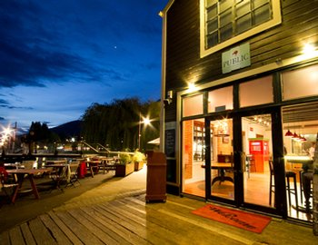
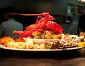
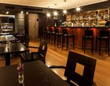
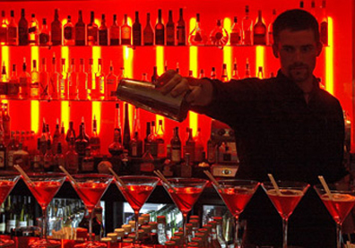
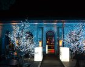
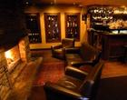
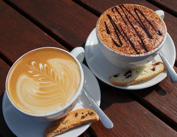
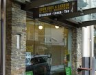
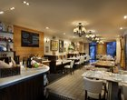

There are over 150 restaurants, bars and cafes to choose from in the Queenstown region with everything from fine dining restaurants offering premium, local artisan fare to family friendly eateries catering to everyone’s tastes.
There’s also specialty food shops, takeaway options, wineries and markets selling local produce.
After enjoying the culinary delights of Queenstown, head out to experience the renowned nightlife. No matter what day of the week you'll find a fun atmosphere in bars and nightclubs with live music and DJs to entertain.
Get your taste of Queenstown with the selection of bars, cafés and restaurants below.

You're spoilt for choice when dining out in Queenstown, with a wide selection of top restaurants to choose from.
Queenstown restaurants are of international standard, offering local and ethnic cuisine from award-winning chefs. In addition to excellent food, Queenstown restaurants offer superb local wines, striking views and exceptional service. Whether you're celebrating a special occasion, doing business or grabbing a quick meal out with friends, there's a Queenstown restaurant that's perfect for you.

Queenstown
Finz Seafood & Grill offers casual relaxed waterfront dining right in the heart of Queenstown.
Finz is a delightful bustling seafood bistro where you can enjoy the wholesome flavours of New Zealand including succulent seafood, premium steaks, New Zealand Lamb and the popular daily Fresh Fish Specials. With great food and great prices in a fabulous location, Finz offers a unique dining experience.

Queenstown
No5 Church Lane is renowned for its world-class cocktail list, unsurpassable service and outstanding locally-sourced Mediterranean style cuisine. No5 also has an excellent selection of vegetarian meals available.
For discerning drinkers in Queenstown No5 is a bar with a difference. Whether a local or just here for a quick visit the team at No5 is ready to satisfy the taste buds with delicious cocktails, fine champagnes, carefully selected local and international wines and some of the tastiest dishes in Queenstown.

Experience Queenstown's legendary night life with a night out at any (or all!) of the local bars and nightclubs.
Settle in for the evening at a cosy wine bar or a friendly pub, or gear up and go bar-hopping in central Queenstown, discovering the best and busiest clubs on the way. Queenstown bars and clubs often have live music and DJs as well as great drink specials. There's a party atmosphere in Queenstown any night of the week, so get out to the bars and clubs and enjoy it!

Queenstown
With unbeatable value for both food and drink, Queenstown’s best outdoor deck, a cosy indoor fire and nightly entertainment it’s easy to see why 1876 has become an enduring local’s favourite of the town’s ever changing bar scene.
1876 came to be when it was converted from the original courthouse, an iconic piece of Queenstown’s history and landscape into the bar and restaurant it is today.

Queenstown
Bardeaux focuses on its extensive wine list to entertain. The range of local Pinot’s is huge and eclectic, backed up by a cellar of vintage wines and champagne. Sumptuous surroundings and a huge open fire.
In the warm weather, there's nothing better than relaxing on our charming outdoor patio making this a favourite with locals and travellers alike.

Enjoy a leisurely breakfast, lunch or coffee break at one of Queenstown's many stylish cafes.
Centred primarily around the town centre, Queenstown cafes offer a selection of drinks and light meals from morning to late afternoon. In winter, cafes offer a cosy respite from the cold, while summer lets you dine al fresco at your choice of cafe. Take a break from shopping, sightseeing or just daily life and enjoy a coffee, cold drink, snack or light meal at a Queenstown cafe.

Queenstown
Vudu Café in the heart of Queenstown is now 12 years old. During this time we have won numerous awards including best café in the area the last 3 years.
Open for breakfast, lunch and dinner with fantastic local wines, a warm fire in winter and outdoor courtyard. We also make birthday and wedding cakes and cater for lunches and canapés.

Queenstown
Named after that hallowed haunt of artists, writers and philosophers on the Seine, Left Bank is a smart sidewalk concept café, part open French-kitchen, part Parisian tea room.